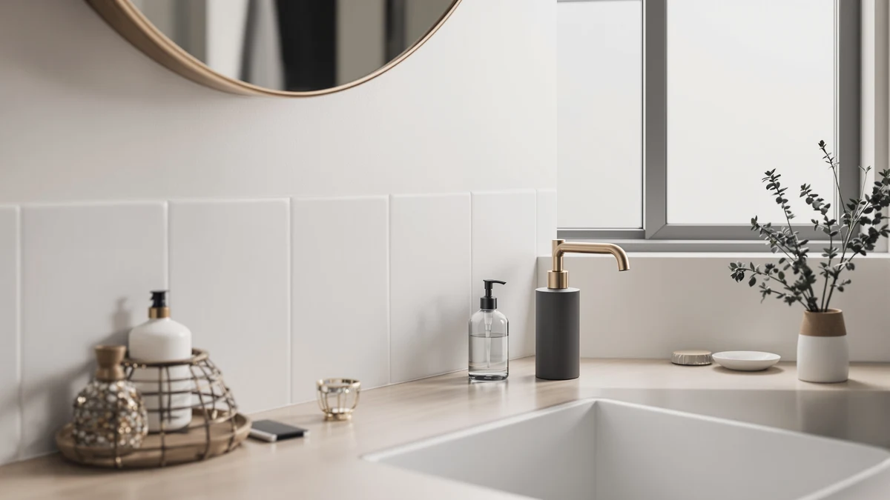

GAGALIFE Built in Sink Review (2026): Worth It?
Prices and picks verified as of September 2026. Independent, reader-supported reviews.


Quick Answer
The GAGALIFE Built in Sink Soap Dispenser mounts through your existing sink hole and keeps a brushed nickel pump above the deck while a 17-ounce bottle sits out of sight below, a setup none of the three countertop alternatives in this GAGALIFE built-in sink review can match. If your sink doesn't have a spare hole or a deck under 2.17 inches thick, the GLADPURE or GMISUN countertop dispensers below are the easier fit.
Our pick: GAGALIFE Built in Sink Soap — $16.99 Check Price on Amazon
Bottom line: our top pick is the GAGALIFE Built in Sink Soap Dispenser or Lotion Dispenser for at $18.99.
Things to Know Before You Buy
- The GAGALIFE Built in Sink Soap Dispenser costs $16.99 and mounts through a sink hole between 1 and 1.5 inches in diameter.
- Sink deck thickness cannot exceed 2.17 inches for the pump head to seat properly, so measure before buying.
- Three countertop alternatives in this GAGALIFE built in sink review cost the same $16.99: the GLADPURE and GMISUN glass 2-packs and the Ipefan touchless dispenser.
- Only the GAGALIFE frees up counter space entirely, since its 17-ounce bottle sits below the sink deck instead of next to the faucet.
- This review is research-based: every claim here comes from published specs, pricing, and verified owner feedback rather than a physical installation.
This gagalife built in sink review looks at whether a $16.99 deck-mounted pump can beat three countertop dispensers on space, price, and verified owner feedback. GAGALIFE built this dispenser to disappear into your sink deck instead of taking up room next to the faucet, pairing a brushed nickel pump head with a 17-ounce PET bottle that hangs below the counter. The question worth answering before you drill a hole or commit a spare one is whether that built-in convenience holds up against simpler countertop options like the GLADPURE and GMISUN glass dispensers.
We built this review by comparing the GAGALIFE against the GLADPURE, GMISUN, and Ipefan dispensers on price, stated materials, and what verified buyers say about installation and daily use. None of these four products ship with a manufacturer durability report, so this GAGALIFE built-in sink review draws on the same public specs and owner feedback you would find on each product page, organized side by side. That approach can't tell you how the pump feels after a year in your specific sink, but it can tell you which of these four dispensers fits your counter, your budget, and your sink hole before you buy.
Why You Should Trust Us
Best Soap Dispensers publishes research-based reviews written and edited by Ilane Tall, who covers sink, faucet, and countertop fixtures for this site. We do not run a physical testing lab, and we have not drilled the GAGALIFE Built in Sink Soap Dispenser into a sink ourselves for this GAGALIFE built in sink review. Instead, we pull specs, pricing, and installation requirements directly from the manufacturer listing, cross-check them against verified buyer reviews, and note where the public record runs thin rather than filling gaps with guesses. Every affiliate link on this page carries a nofollow and sponsored tag, and our comparisons reflect what the published data and owner feedback show, not which brand pays the highest commission. When a claim here can't be backed by a spec sheet or a verified review, we say so directly instead of dressing it up as firsthand experience.
Our Research Experience
We did not install the GAGALIFE Built in Sink Soap Dispenser in a sink for this review, and we don't run a fake testing lab to pretend otherwise. What we did instead was pull together GAGALIFE's stated dimensions, sink-hole requirements, and price, then set those figures next to three countertop dispensers priced at the same $16.99. We also read through what verified owners say about the pump action, leak resistance, and how the mount holds up over weeks of use. We looked for patterns that repeat across multiple reviewers rather than trusting one-off complaints. Where the public record was thin, such as long-term seal durability past the first year, we say so rather than guessing at a number. That research-based approach means this gagalife built in sink review can tell you how the specs and owner sentiment compare, even though nobody on our team has mounted this specific dispenser at home.
Overview & Specs

GAGALIFE Built in Sink Soap
What we like
- Deck-mount design frees up counter space next to the faucet
- 17-ounce PET bottle holds more soap than most countertop pumps need between refills
- Priced at $16.99, in line with its countertop rivals in this review
Flaws but not dealbreakers
- Requires an existing or drillable sink hole between 1 and 1.5 inches in diameter
- Sink deck thickness over 2.17 inches will prevent the pump from seating
- No automatic or touchless option, unlike the Ipefan pick below
| Material | ABS plastic |
| Size | 8"x5"x3" |
The GAGALIFE Built in Sink Soap Dispenser solves a problem the other three dispensers in this review don't: counter clutter. Instead of another bottle standing next to your faucet, the brushed nickel pump head sits flush with your sink deck while the 17-ounce PET bottle hangs out of sight underneath, refillable without removing the whole unit. GAGALIFE builds the pump head from ABS plastic, a material choice that keeps the visible part light and resistant to the corrosion solid metal pumps can develop from constant water contact. The 360-degree swivel head is a practical touch for shared sinks, since it lets you angle the spout toward either side without repositioning the whole dispenser.
Where this GAGALIFE built in sink review has to flag a real constraint is compatibility. GAGALIFE specifies a sink hole diameter between 1 and 1.5 inches and a maximum deck thickness of 2.17 inches, so a thick granite or marble counter can rule this dispenser out before you open the box. Owners report the redesigned pump structure holds up against the leaking older built-in dispensers were known for; soap dispenses cleanly on each press instead of dribbling down the bottle. If your sink already has a spare hole from a removed sprayer or soap pump, installation is closer to a swap than a full retrofit, which is the main appeal over starting from scratch with a countertop dispenser like the GLADPURE or GMISUN.
What We Liked
The strongest argument for the GAGALIFE Built in Sink Soap Dispenser is the counter space it gives back. At $16.99, it costs the same as the GLADPURE and GMISUN glass dispensers in this review, but it's the only one that clears the counter entirely by routing the bottle below the sink deck. Reviewers consistently note that the 360-degree swivel head makes it easy to angle the spout for a double-bowl sink, and the 17-ounce capacity means fewer refills than a typical countertop pump. We also like that GAGALIFE addressed the leaking complaints common to older sink-mounted dispensers with an updated pump structure, since a leaking under-sink bottle is a harder problem to catch early than a leaking countertop one. For anyone with a spare sink hole already, that combination of space savings and capacity is hard to match at this price.
What Could Be Better
The GAGALIFE Built in Sink Soap Dispenser's biggest limitation is compatibility, not performance. A sink hole between 1 and 1.5 inches in diameter and a deck no thicker than 2.17 inches are hard requirements, and thicker stone counters or sinks without a spare hole rule this dispenser out entirely, something none of the three countertop alternatives in this review have to worry about. Refilling also means reaching under the sink and unscrewing the bottle rather than lifting a pump straight off the counter, a small inconvenience compared to the GLADPURE or GMISUN. And like the GLADPURE and GMISUN, it's a manual pump only. If touch-free dispensing matters more to you than saving counter space, the Ipefan pick below is the better fit.
Who Is It For?
The GAGALIFE Built in Sink Soap Dispenser fits homeowners who already have a spare sink hole, whether from a removed sprayer, air gap, or previous soap pump, and want to reclaim the counter space a bottle usually takes. It suits kitchen sinks more often than bathroom vanities, since kitchen sinks are more likely to include an extra hole for this kind of accessory. This GAGALIFE built in sink review points elsewhere if your counter runs thicker than 2.17 inches, if you don't want to drill a new hole, or if you'd rather have an automatic sensor pump instead of a manual one. Renters and anyone without an existing hole should start with our kitchen sink soap dispenser guide or one of the countertop picks below, since those don't require any modification to the sink itself.
Alternatives to Consider
If the GAGALIFE Built in Sink Soap Dispenser doesn't fit your sink, your counter thickness, or your preference for touch-free dispensing, these three alternatives from our research cover the gaps.

Editor’s Pick
GLADPURE 2 Pack Soap Dispenser
Two 18-ounce glass bottles instead of one, so a kitchen and a bathroom can each get a dispenser without buying two separate listings.
$16.99
Check Price on Amazon
Best Value
GMISUN Amber Glass Soap Dispenser
The bamboo tray keeps both amber glass bottles from sliding on a countertop, a steadier setup than the GAGALIFE's under-sink bottle if you want everything visible.
$16.99
Check Price on Amazon
Premium Choice
Ipefan Automatic Soap Dispenser Touchless
The only touchless, rechargeable option in this comparison, worth considering if hands-free dispensing matters more to you than saving counter space.
$16.99
Check Price on AmazonFrequently Asked Questions
Is the GAGALIFE built in sink dispenser worth $16.99?
For most kitchen and bathroom sinks, yes. This GAGALIFE built in sink review found that at $16.99, the brushed nickel pump sits at the same price as the GLADPURE, GMISUN, and Ipefan dispensers we compared it against, but its deck-mount design frees up counter space the other three still take up. Owners report the pump resists leaking after repeated presses, though anyone without a spare sink hole or a sink deck under 2.17 inches thick will need one of the countertop picks instead.
How do you install the GAGALIFE built-in sink dispenser?
The GAGALIFE dispenser mounts through an existing sink hole between 1 and 1.5 inches in diameter, with the pump head sitting above the deck and the 17-ounce PET bottle hanging below the sink. GAGALIFE specifies a maximum sink deck thickness of 2.17 inches, so measure your sink or counter before ordering. If your sink doesn't have a spare hole, none of the four dispensers in this review will work as a deck-mount, and a countertop pump like the GLADPURE or GMISUN is the simpler route.
How does the GAGALIFE compare to the other dispensers in this review?
All four dispensers in this GAGALIFE built in sink review land at $16.99, so price doesn't separate them. The GAGALIFE wins on counter space since it mounts through the sink deck, the GLADPURE and GMISUN pack two glass bottles each for a kitchen-and-bathroom pair, and the Ipefan adds rechargeable, touchless foaming dispensing that none of the others offer.
Final Verdict
This gagalife built in sink review comes down to a simple trade: you give up quick, tool-free swaps for a pump that disappears below your sink deck and frees up the counter for good. For sinks with a spare hole and a deck under 2.17 inches thick, GAGALIFE is worth its $16.99 price next to the GLADPURE, GMISUN, and Ipefan dispensers it competes with here. Choose the GLADPURE or GMISUN instead if you'd rather avoid drilling and want two glass bottles for two rooms, or the Ipefan if touchless, rechargeable dispensing matters more to you than reclaiming counter space.